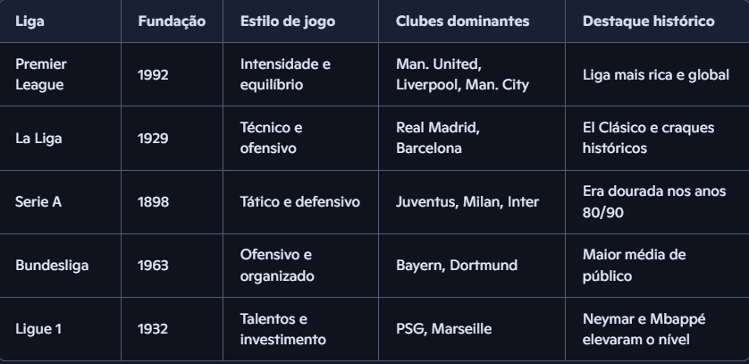

História das 5 Principais Ligas de Futebol
⚽ Premier League (Inglaterra)
• Fundação: 1992, após a separação da antiga Football League First Division.
• Características: É considerada a liga mais competitiva do mundo, com equilíbrio entre clubes e forte poder financeiro.
• Clubes icônicos: Manchester United, Liverpool, Arsenal, Chelsea, Manchester City.
• Destaque histórico: A Premier League revolucionou o futebol com contratos televisivos bilionários e marketing global, tornando-se a liga mais assistida do planeta.
La Liga (Espanha)
• Fundação: 1929.
• Características: Conhecida pelo estilo técnico e ofensivo, dominada historicamente por Real Madrid e Barcelona.
• Clubes icônicos: Real Madrid, Barcelona, Atlético de Madrid.
• Destaque histórico: O “El Clásico” entre Real e Barça é um dos jogos mais assistidos do mundo. A liga revelou craques como Messi, Xavi e Iniesta.
Serie A (Itália)
• Fundação: 1898, sendo uma das ligas mais antigas do mundo..
• Características: Famosa pelo futebol tático e defensivo, com esquemas que marcaram gerações.
• Clubes icônicos: Juventus, Milan, Inter de Milão, Napoli.
• Destaque histórico: Nos anos 1980 e 1990, a Serie A era considerada a liga mais forte do mundo, atraindo os maiores craques.
Bundesliga (Alemanha)
• Fundação: 1963.
• Características: Reconhecida pela organização, estádios modernos e a maior média de público do futebol mundial.
• Clubes icônicos: Bayern de Munique, Borussia Dortmund, Borussia Mönchengladbach.
• Destaque histórico: O Bayern domina a competição, mas a liga é referência em formação de jovens talentos e gestão sustentável.
Ligue 1 (França)
• Fundação: 1932.
• Características: Sempre revelou grandes talentos, mas ganhou protagonismo mundial com o investimento do PSG na última década.
• Clubes icônicos: Paris Saint-Germain, Olympique de Marseille, Lyon.
• Destaque histórico: O “Le Classique” entre PSG e Marseille é a maior rivalidade da França. O PSG, com Neymar e Mbappé, colocou a Ligue 1 em evidência global
